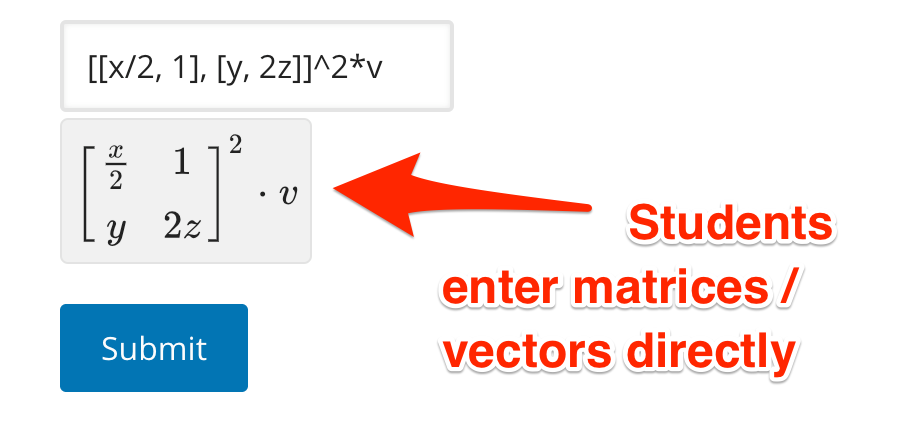

MatrixGrader#
MatrixGrader is an extended version of FormulaGrader used to grade mathematical expressions containing scalars, vectors, and matrices. Authors and students may enter matrix (or vector) expressions by using variables sampled from matrices, or by entering a matrix entry-by-entry.
| Input only with symbols: | Input entry-by-entry (and maybe symbols): |
|---|---|
This approach is useful when you need non-commutative algebra but do not need students to explicitly enter vector/matrix entries. 
|
 |
Note
In order for matrices entered entry-by-entry to display correctly in edX, authors must use the AsciiMath renderer provided by <textline math='true'/>.
A first example#
A typical use of MatrixGrader might look like
>>> from mitxgraders import *
>>> grader1 = MatrixGrader(
... answers='4*A*B^2',
... variables=['A', 'B', 'v'],
... sample_from={
... 'A': RealMatrices(),
... 'B': RealMatrices(),
... }
... )
Here, the RealMatrices sampling class samples from 2 by 2 matrices by default. See Sampling for more information.
The next few lines call the grader as a check function. The inputs '4*A*B^2' and '4*A*B*B' are correct:
>>> grader1(None, '4*A*B^2')
{'grade_decimal': 1, 'msg': '', 'ok': True}
>>> grader1(None, '4*A*B*B')
{'grade_decimal': 1, 'msg': '', 'ok': True}
while the input '4*B^2*A' is incorrect because the matrix-sampled variables are non-commutative:
>>> grader1(None, '4*B^2*A')
{'msg': '', 'grade_decimal': 0, 'ok': False}
Matrix Entry#
Vector and Matrix Operations#
Shape Errors#
Many matrix operations are invalid—for example, adding two matrices of different shape. MatrixGrader works hard to provide students with useful error messages.
>>> grader2 = MatrixGrader(
... answers='A*B*v',
... variables=['A', 'B', 'v'],
... sample_from={
... 'A': RealMatrices(shape=[3, 2]), # specifically sample 3 by 2 matrices
... 'B': RealMatrices(shape=[2, 2]),
... 'v': RealVectors(shape=2) # sample vectors with 2 components
... }
... )
Some sample error messages:
| Student input: | Valid? | Student receives error message: |
|---|---|---|
'A+B' |
No | Cannot add/subtract a matrix of shape (rows: 3, cols: 2) with a matrix of shape (rows: 2, cols: 2). |
'v*A' |
No | Cannot multiply a vector of length 2 with a matrix of shape (rows: 3, cols: 2). |
'B*v' |
Yes | n/a |
'A^2' |
No | Cannot raise a non-square matrix to powers. |
'B^2' |
Yes | n/a |